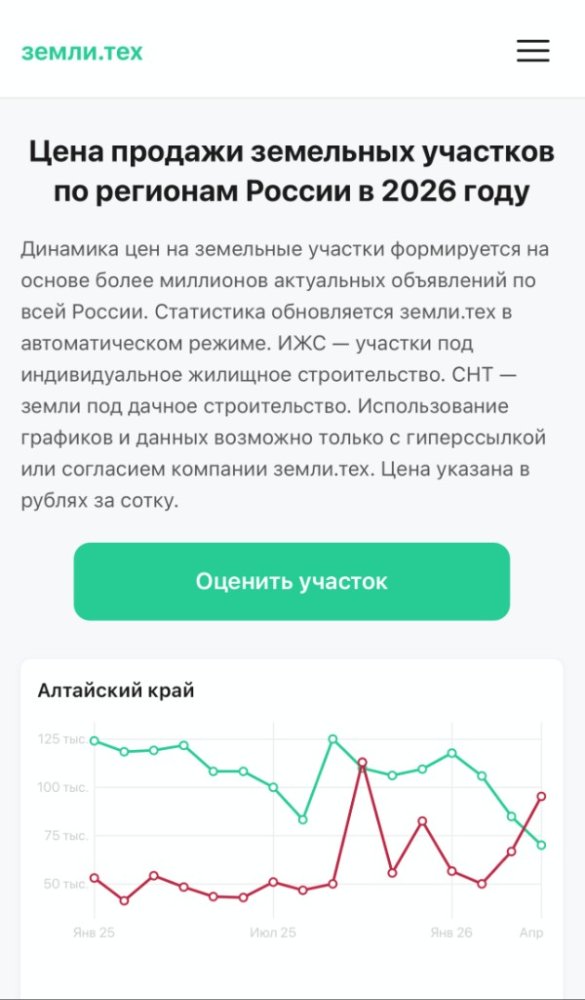

Дашборд
Рынок участков ИЖС и СНТ по регионам
Сбор данных → анализ → визуализация в цветах бренда → деплой и домен
Дашборд по данным рынка земли: 73 региона, по каждому — средняя цена сотки для ИЖС и СНТ. Видно среднюю цену, сезонность и тренд: растет, падает или стоит на месте. Подойдет и для внутреннего заказчика, и для поста в соцсети.
Смотреть дашборд